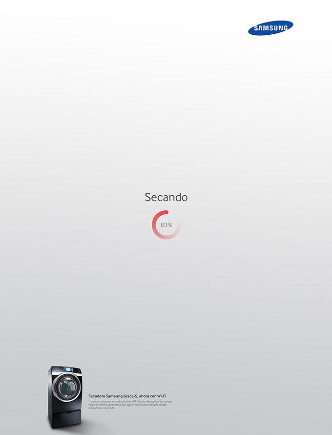

摘要: 在品牌广告设计中，通过隐藏、留空、分解等手法营造出画面的空白部分，用一个最简洁的图像、一个最有意味的形式给观者心理上带来一种松动感和自由感。
留白可被视为意象表达的一类特殊形式，借鉴中国传统绘画艺术中“留白”的特殊表现方法，利用留白来营造出相关意象。顾名思义，留白就是在作品中留下相应的空白。
在品牌设计中，通过隐藏、留空、分解等手法营造出画面的空白部分，用一个最简洁的图像、一个最有意味的形式给观者心理上带来一种松动感和自由感。充分运用审美心理与美学原则相结合营造出空白，以此来深化品牌广告设计作品中所要传达出的真正的信息内容，使作品“留白”部分成为视觉上和心理活动中的一个焦点，从而提升受众对作品的注目度。
留白是一种无形的气韵美
我国文化博大精深、玄妙莫测的“气韵”、“意境”的美学特色，正是通过笔墨呈现的黑、白两者之间的关系来体现的。传统的国画不加底色，于是留白甚多，我们常见一幅国画往往出现大量的空白，这在表层的意义上不仅仅是符合人们的视觉要求，也是符合审美习惯和审美趣味的。
传统审美观念，即重视露，更重视藏，实中见虚，明中见幽，大中见小，直中有曲，静中蕴藏着动和力。在黑墨团中藏着万趣，不同浓淡的墨团包围着形状各异的空白，使画面显得透亮，幽深。白是黑的扩散，黑是白的凝聚；黑是实，白是虚；黑是密，白是疏；既对立又统一。画面中的黑与白，实与虚，密与疏形成了不同大小的黑白团块。纸是白颜色的，留白相当于画上的白色颜料，能使画面增加层次感。
“白”虽然观之无形，其实是一种意境的体现。品牌广告设计中画面里的留白实际上是一个相对的概念，是作为一种含蓄、暗示的表达方式出现的，而不是真正的空白；广告的留白虽然不直接作为广告信息宣传的载体，但它所具有的回味和思考的余地能为广告受众提供丰富的思维活动，从而达到加强记忆的功效。推荐阅读：适度的留白！以少胜多的设计技法！
留白是一种虚实结合的灵动美
品牌设计版面中图形文字与留白的关系，也可以理解为正负之间的关系。空白空间在特殊情况下以抽象形态出现，图与空间的概念出现矛盾的现象，设计中的空白空间与图形本身是不分前后的镶嵌式的组合，真正的背景空白空间已经看不见了，两种图形就会互为背景。在品牌设计中设计师可根据需要对版面进行正负形的划分，从而唤起观看者的兴趣，以提高对作品的关注程度。

恰当的留白可以创造出虚实空间，会让作品有灵动、透气之感，而这些效果都得力于画面中大面积的留白。留白是一种隐藏的智慧，也是一种美的境界，而虚实的对比并置则更加丰富了作品的节奏韵律。如果我们能将这种独特的留白艺术运用到设计中并研究它的虚实关系，且能恰当的把握好，那么作品一定能够产生意想不到的效果。
好的设计，不仅能够吸引受众关注，更能够唤起受众内心的情感需求，使之产生共鸣，引起观者积极的心理感受，以此加强作品的格调情趣，通过运用留白的处理手法更能将这一特性充分的发挥。留白的“虚”能够更好的衬托出画面的“实”，而这里的“虚”并不是空虚，而是蕴涵了设计师的情感，能够营造出作品的情趣意境的“虚”。
留白是一种含蓄，含蓄又是一种趣味，能使观者在感受作品格调情趣的同时不经意地把握主题内涵。通过画面留白，形成恰当的虚实对比，营造出“笔虽未到，而意已至”的意象。通过留白给观者留有足够的想象回味空间，使观者看后还能“意犹未尽”，这无疑比平铺直叙的陈述要印象深刻的多。
留白是一种张弛有度的视觉美
留白是品牌设计中不可或缺的部分，是设计师精心安排、特意营造的氛围情趣，能更好的提升和强化作品的视觉效果。尤其在当今网络畅通、信息爆炸的快节奏的生活中，视觉和心理上的疲劳使人们渴望拥有一份宁静的空间，也就是说，人们心理上需要张弛有度，而留白犹如音乐中的休止符，给人一个停顿，恰好能满足现代人这一精神追求。
留白所创造的空白空间能够为观众营造出轻松愉悦的欣赏环境。而空白空间被品牌设计师巧妙的运用后则能给观众带来无限的想象空间，并激发出观众的联想和想象力，最终出现戏剧性的效果。一个被各种文字图片塞得满满的品牌设计，会让观众一看就觉得烦，无心观看下去自然就达不到设计师原来的初衷。
倘若能够在品牌设计中适当地留白，则可以引起观众更多的想象和思考空间，能使他们的心灵不会感到紧张和空白，并且能让他们的视觉得以喘息。所以品牌设计师应十分关注留白所产生的空白空间在品牌设计中的合理运用，因为它能最大限度地激起观众的艺术想象力，从而能更好地去深深发掘品牌作品中所潜藏的深刻意蕴美。
按照格式塔心理学派的“完形压强”理论所说：当人们在观看一个有“缺陷”或“空白”的形状时，会情不自禁地产生一种紧张的“内驱力”，并促使大脑积极兴奋地活动，所以我们要纠正以往的思维定式，不要认为这是在浪费空间，硬是要把画面挤的满满的才罢休，我们要知道正是这种留白才给了观众更多的思考和发挥想象力的空间，还可以让眼睛得到休息，也能衬托内文，从而增强画面的意蕴美。
在品牌广告设计中，我们常常希望简单的图形包含足够丰富的内容和信息，使作品单纯却不空洞，简洁又回味无穷。如果我们在设计中创造图形时巧妙地运用人们心理上的“完结效应”，尽管图形本身是残缺的，但仍能使大脑获得一个完整的知觉对象。利用这种似隐非隐的手法不仅将得到更简练抽象的图形，同时所创造得图形更能增加我们视觉的新鲜感和趣味性。
品牌广告设计中留白的使用，作为一种有效的画面处理方法，能够营造出特定的氛围情景，并将版面中所有图形文字要素统一协调在这种意境中，使之能够更含蓄有效的传达信息。使用这种方法可以简洁有效地提升作品的品位情趣，并能够更加吸引观众注目，引发观众思考，留下深刻印象。
在品牌设计中要积极的使用留白，运用留白描绘出实体图形无法描绘的情境、气氛，使留白、文字、图形、图片、色彩等要素共同为设计创意的表达服务，这样才能提升和强化品牌广告作品的视觉传达表现效果、加强作品的格调情趣以及增强作品的意蕴美。

济南海右博纳品牌营销咨询有限公司
Copyright 2001-2019 All Rights Reserved Sivibrand.
王伟品牌顾问微信